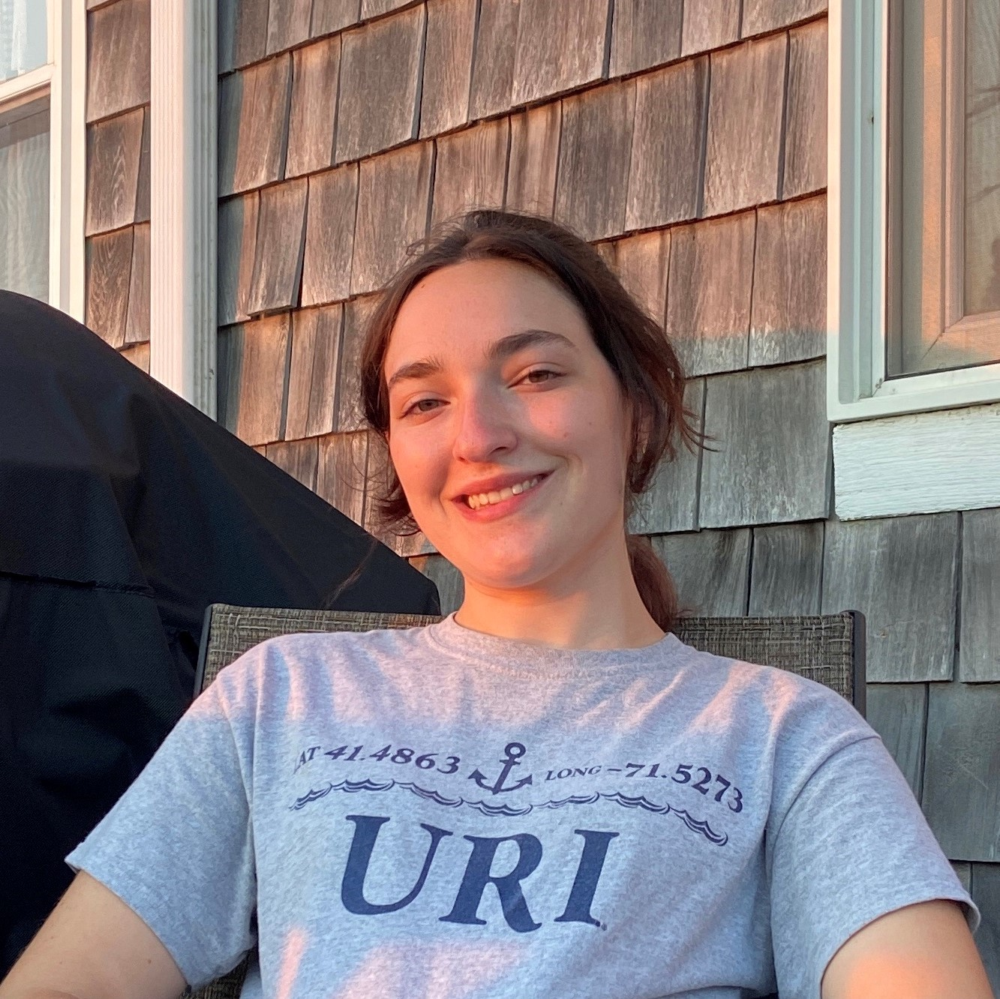
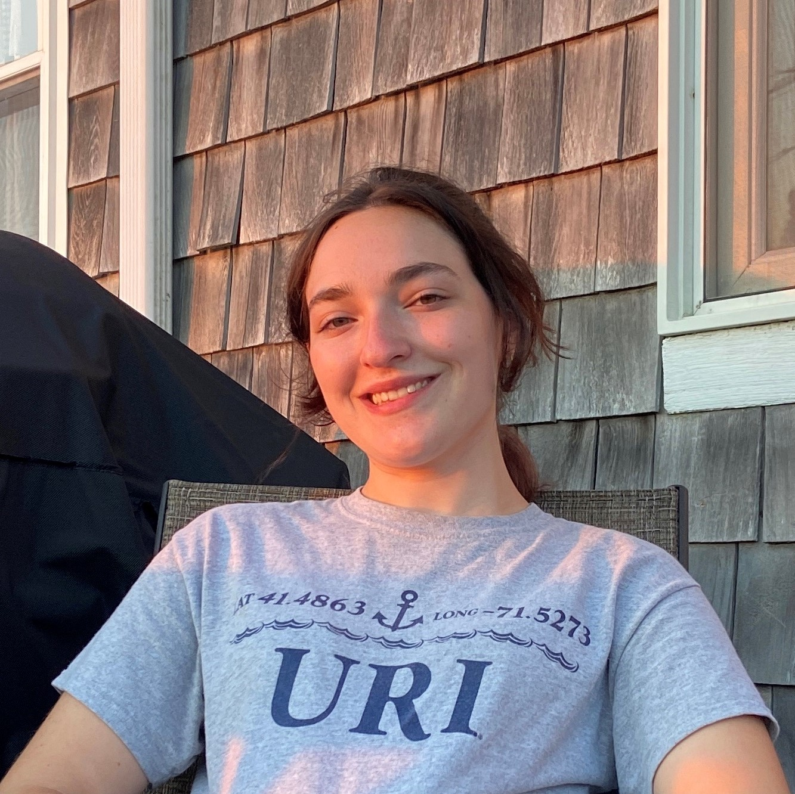

|
 |
 |
 |
|---|
About Me
Hello! My name is Leah Struminsky. I am a senior Health Studies major with a specialization in health services at the Univeristy of Rhode Island. I have thoroughly enjoyed this program since it is very interdisciplinary and interesting. I hope to find my place in the healthcare field in the near future.
I am currently enrolled in CSC106: The Joy of Programming. I enrolled in this course hoping to learn something new, interesting, and useful. One of my favorite hobbies is art. I love to work with acrylic paint and colored pencil. The artwork included on this page is one of my first created with colored pencil, completed my senior year of highschool. I like to learn new crafty skills like sewing, knitting, and crochet as well. I also have a dog named Fitch who absolutely loves to go for car rides and walks.

 
